Upholstery & Reupholstery
in Montreal
We restore, reupholster, and custom-build furniture for Montreal homes and businesses — using premium materials and decades of hands-on expertise.
Upholstery services built around your piece
Whether you have a cherished antique, a worn-out sectional, or a vision for something entirely new — we have the skills to bring it to life.
Furniture Repair
Broken frames, sagging springs, torn seams, worn padding — we diagnose and repair all structural and surface issues so your furniture is comfortable and beautiful again.
Learn more →Reupholstering
Give your furniture a complete transformation. New fabrics, new foam, new life. We work with an extensive selection of leathers, velvets, linens, and performance fabrics.
Learn more →Custom Manufacturing
Have a specific vision? We design and build custom sofas, chairs, banquettes, and headboards from scratch — tailored precisely to your space, style, and comfort requirements.
Learn more →Craftsmanship you can see, quality you can feel
Decades of Expertise
Over 30 years crafting and restoring furniture in Montreal. We've handled everything from Victorian antiques to contemporary modular sofas.
Premium Materials Only
We source high-density foam, kiln-dried hardwood frames, and premium fabrics. Every material is chosen for longevity, comfort, and aesthetic excellence.
Precision at Every Step
From initial measurement to final stitch, every step is executed with meticulous attention to detail. We don't cut corners — we cut fabric, perfectly.
Sustainable Choice
Reupholstering extends the life of quality furniture by decades, keeping it out of landfills and reducing the environmental footprint of furnishing your home.
Proudly Local
Based in NDG, Montreal. We serve clients across the island and surrounding regions, with pickup and delivery available throughout the greater Montreal area.
4.9★ Stars on Google
Trusted by hundreds of Montreal clients with a 4.9-star Google rating. Our reputation is built one piece at a time — yours will be no different.
Choose from over 200 premium fabrics
From rich velvets to durable performance weaves — we'll help you find the perfect material for your piece, your space, and your lifestyle.
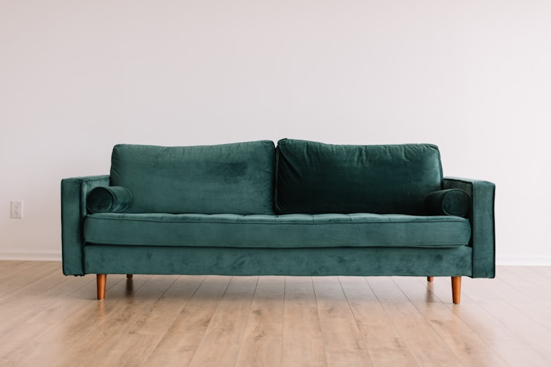
Premium Velvet
Luxurious feel, 200+ colors
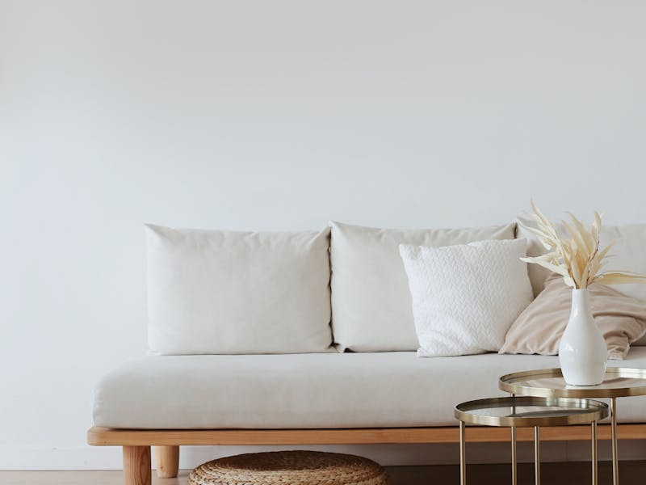
Natural Linen
Breathable, timeless texture
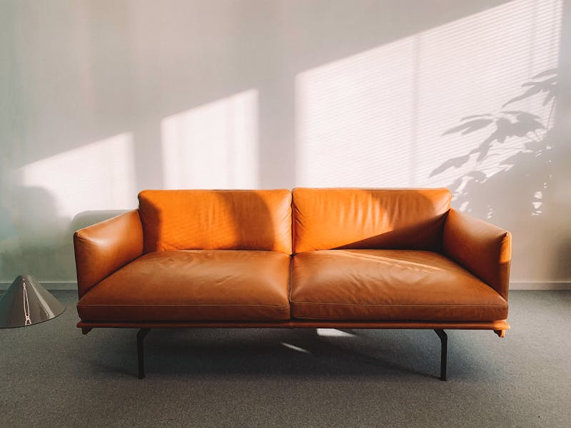
Full-Grain Leather
Ages beautifully, built to last
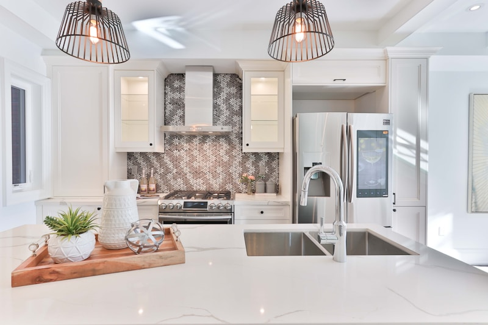
Bouclé Texture
On-trend looped weave, cozy feel
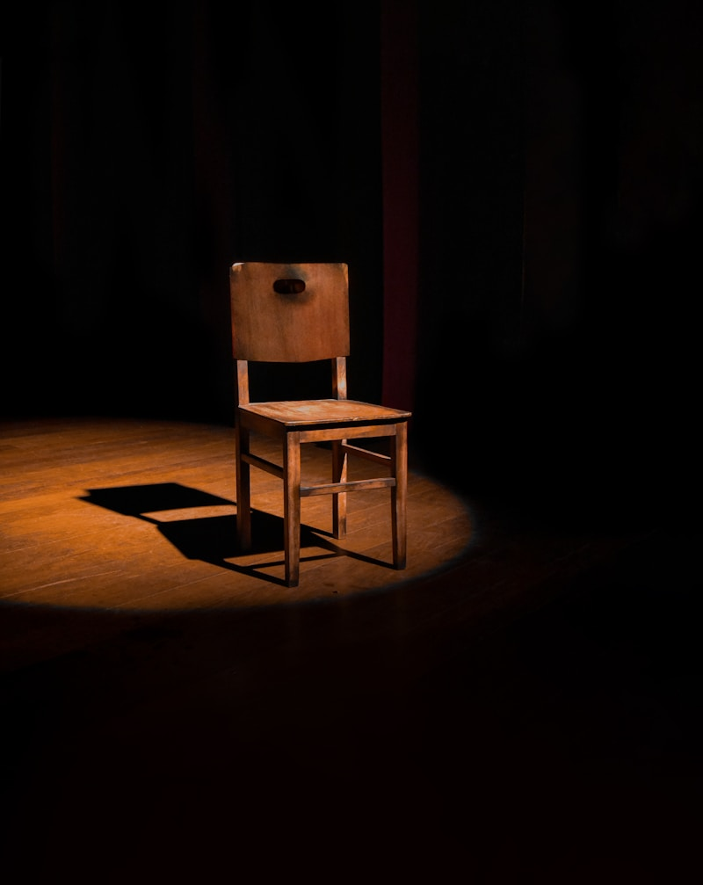
Classic Herringbone
Tailored pattern, enduring style
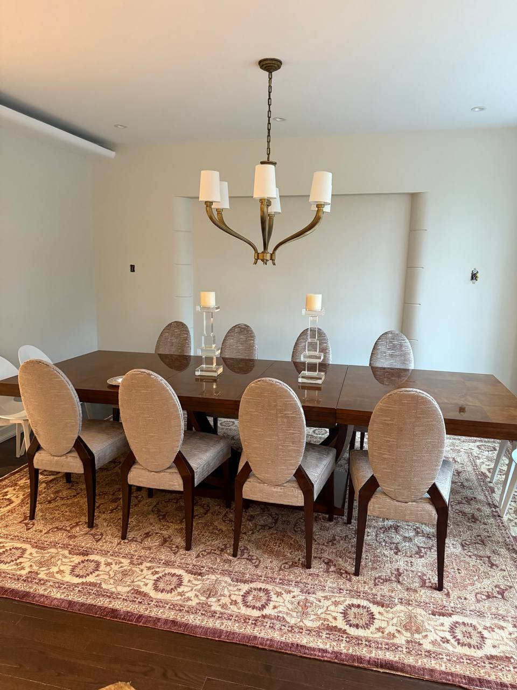
Performance Fabric
Stain-resistant, indoor & outdoor
Visit our studio to browse the full collection in person — book a consultation
Simple. Transparent. Stress-free.
Getting your furniture transformed is easier than you think. Here's how we work together from first contact to final delivery.
1. Share Your Project
Contact us by phone, email, or our quote form. Describe your piece, share photos, and tell us your vision. We respond within 24 hours.
2. Choose Your Materials
We'll guide you through fabric and material options that fit your style, budget, and practical needs. No pressure — just expert guidance.
3. We Craft & Deliver
Our craftspeople get to work with precision and care. We'll keep you updated throughout, then arrange delivery or pickup when your piece is ready.
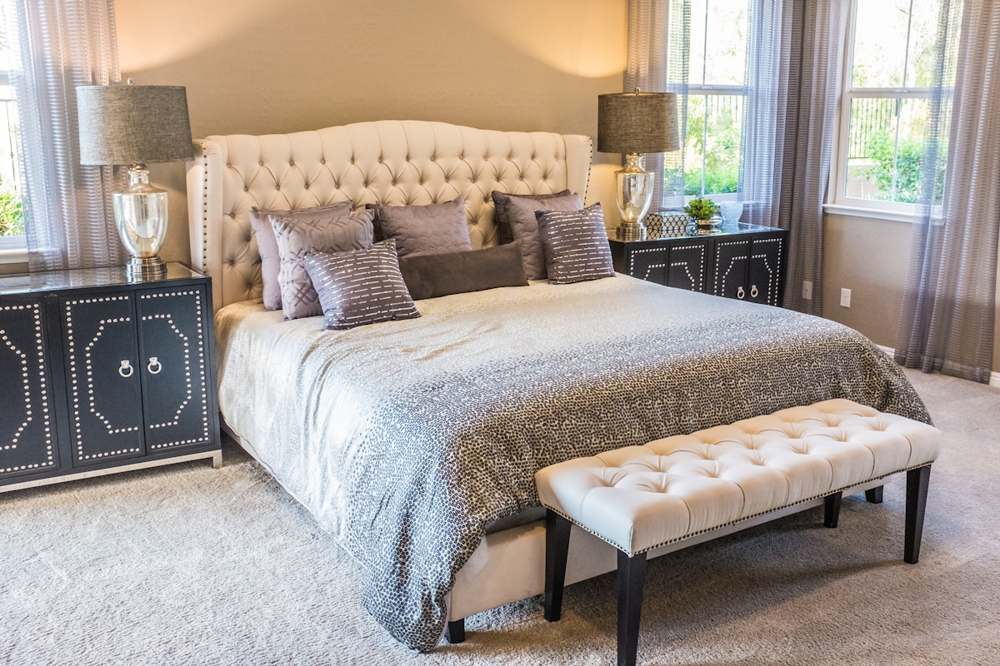

Custom Headboards & Upholstered Beds
Transform your bedroom into a sanctuary. We design and build custom upholstered headboards and full bed frames — from sleek modern panels to classic tufted statement pieces. Choose from over 200 fabrics and any size.
- Platform & storage bed frames
- Floor-to-ceiling headboard panels
- Tufted, channel, and panel styles
- Any fabric — velvet, linen, leather, bouclé
- Custom sizing to fit any bed


Custom Banquette Seating
Built-in banquette seating for kitchens, dining rooms, restaurants, and cafés. We design and upholster custom bench seating to your exact dimensions — maximizing space while adding a signature design element to any room.
- Residential kitchen & dining banquettes
- Restaurant & café booth seating
- Built-in & freestanding options
- Commercial-grade fabrics available
- Any size — straight, L-shape, or U-shape
What Montreal says about us
"I brought in a 1950s wingback chair that had been in my family for generations. The team at Atlas completely transformed it — the craftsmanship is extraordinary. It looks even better than it must have when it was new."
"Had a custom banquette built for our restaurant. Atlas nailed the dimensions, the fabric selection was perfect, and it was delivered on time. Several customers have asked where we got it. Highly recommend."
"The price was very reasonable for the quality of work. They reupholstered our entire living room set in a beautiful navy velvet.. Communication throughout was professional and genuinely caring."
Real projects. Real results.
A sample of the furniture we've restored, reupholstered, and custom-built for Montreal homes and businesses.
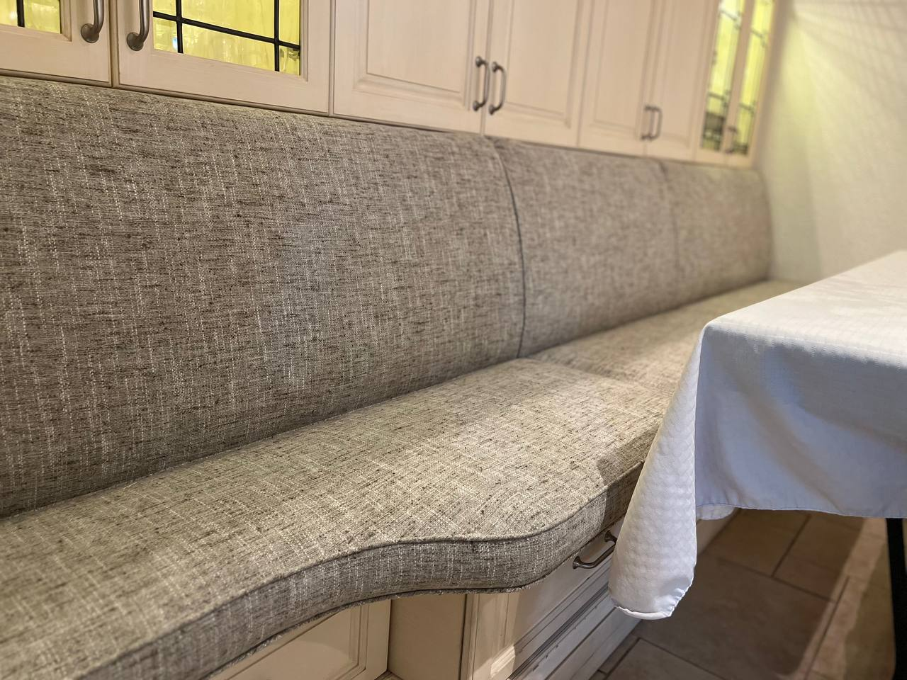
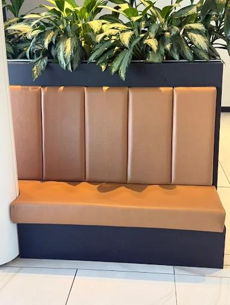
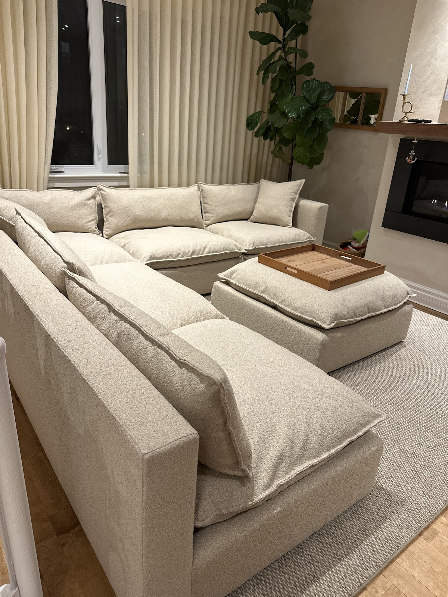
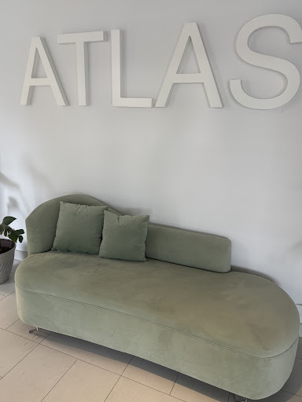
Frequently asked questions
-
Reupholstering costs vary based on the piece size, fabric choice, and complexity. A standard two-seat sofa typically ranges from $800–$1,800 CAD. We provide free, no-commitment estimates — contact us for an accurate quote.
-
Most residential projects are completed within 2–4 weeks from fabric confirmation. Custom manufacturing may take 4–8 weeks depending on complexity and material sourcing.
-
Yes, we offer pickup and delivery across the greater Montreal area for an additional fee. Contact us to arrange a convenient time.
-
Absolutely. We welcome customer-supplied fabrics. We'll advise on yardage requirements and suitability before you purchase.
-
In most cases, yes — especially for quality-built or sentimental pieces. A well-crafted sofa frame can last decades with fresh upholstery, and the result often exceeds the quality of new mass-produced furniture at a similar price point.
-
Custom banquette pricing depends on dimensions, fabric choice, and complexity of build. Residential kitchen banquettes typically start around $800–$1,500. Restaurant or commercial banquettes are quoted by the linear foot. Contact us for a free estimate.
-
A custom upholstered headboard starts around $350–$600 for a queen size in standard fabric. King-size, floor-to-ceiling panels, or premium leather can range from $700–$1,500+. We provide free, no-obligation estimates.